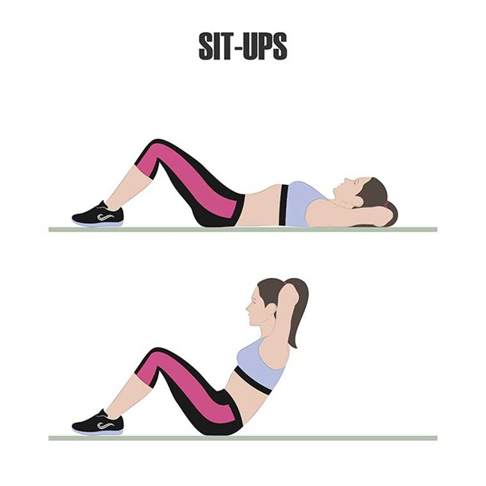
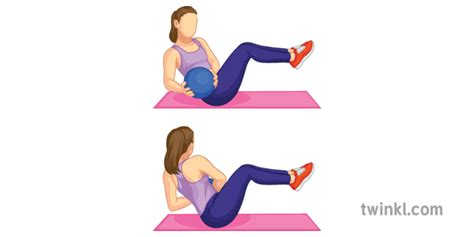

Leg Exercises
Squad Jump
- Start by lying on your back with your knees bent.
- Put your fingertips on the back of your ears.
- Lift your torso up as close to your thighs as possible.
- Lower your torso down to the floor so you’re back in the starting position
- Do 3 sets of 10-15 reps.
This exercise should be done 2-3 times a week.
Bulgarian Split Squats
- Place a mat or towel on the floor. Elevate your upper body.
- Twist. With your arms extended in front of you, twist your torso to the right side. Twist until your arms are parallel to the floor. Hold the position for a second or two and breathe out.
- Try to do 3 sets of 8-12 reps.
Don't use any weights when you first start doing Russian twists.
Crunch
- Lie on your back on an exercise mat.
- Bend your knees so your feet are flat on the floor.
- Cross your arms behind your head.
- Lift your shoulder blades off of the mat with a smooth, controlled motion.
- If the exercise is too easy pull your legs to your chest at the same time.
- Do 5 sets 45 seconds
This exercise should be done 4 times a week.